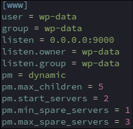

Sets user and group of php-fpm processes to wp-data
wp-data only has access to files they own. Cannot modify systemfiles
Will listen on all ip addresses on port 9000
Only from inside the docker network – no externally exposed ports
Name / group of the user of the unix port for internal connections
How php-fpm will control the number of child processes
dynamic: the number of child processes are set dynamically based on the following parmaters
The maximum number of children that can be alive at the same time
The number of children created on startup
the minimum number of children in 'idle' state (waiting to process). If the number of 'idle' processes is less than this number then some children will be created
the maximum number of children in 'idle' state (waiting to process). If the number of 'idle' processes is greater than this number then some children will be killed.